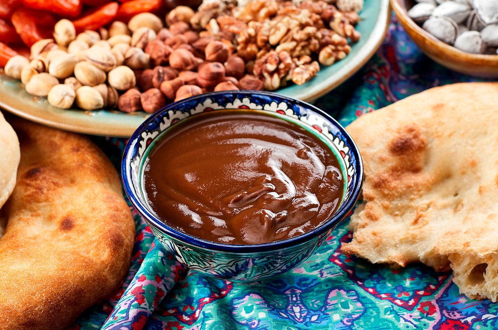
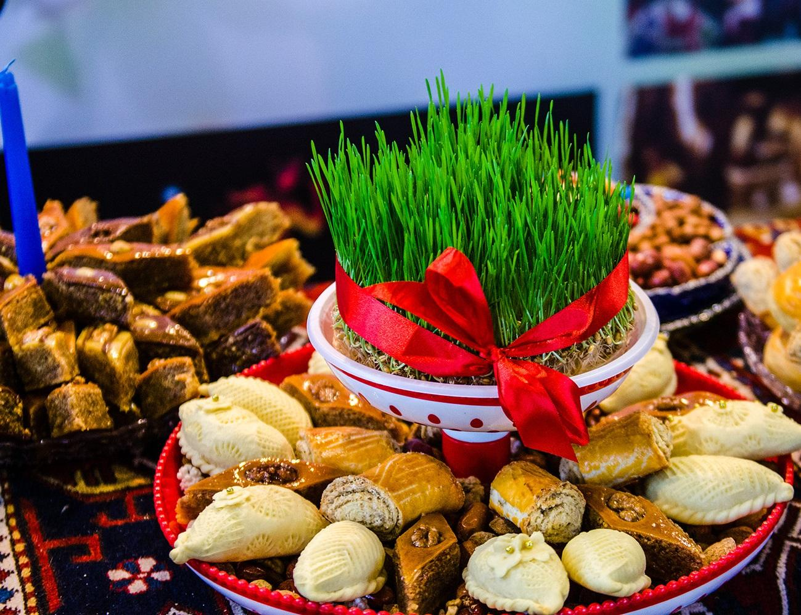

Когда
Весеннее равноденствие
Навруз связан с приходом весны: день и ночь становятся почти равными, а природа просыпается.
Навруз отмечают в дни весеннего равноденствия. Это праздник обновления, добрых встреч, уважения к традициям и надежды на щедрый год.
Встреча весны и нового начала
Чистота, добрые слова и угощения
Семья, дружба и радость
Навруз связан с приходом весны: день и ночь становятся почти равными, а природа просыпается.
Праздник напоминает, что каждый год можно начинать с чистого листа — с добром и надеждой.
Навруз отмечают вместе: делятся угощением, поддерживают друг друга и укрепляют отношения.
Перед праздником приводят в порядок дом и двор — чтобы встретить весну красиво.
Навещают близких, мирятся, желают здоровья и удачи на весь год.
Готовят угощения, делятся ими с гостями и соседями — как символ щедрости.
Зелёный цвет и ростки напоминают о пробуждении природы и новых начинаниях.
Солнечные оттенки символизируют радость, энергию и долгожданную весну.
Сумаляк готовят из пророщенной пшеницы — часто вместе, в атмосфере дружбы и поддержки.

